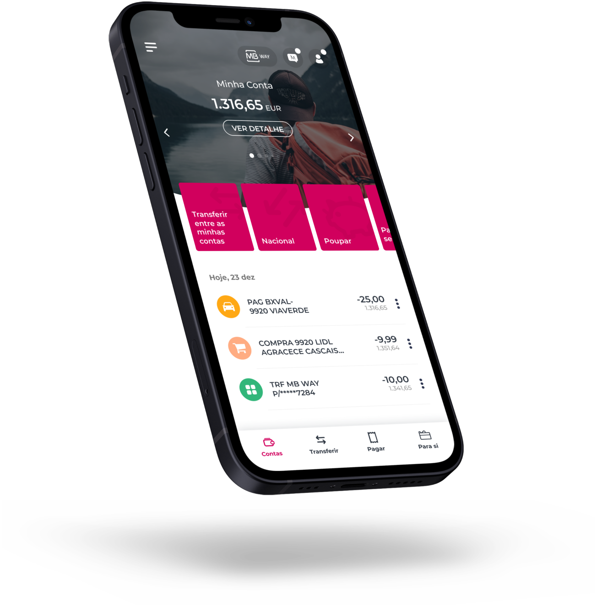

Building the system
Project for Millennium bcp,
and Activo Bank,
One multibrand Design System
for two distinct brands
in the financial sector.
This project started in 2020 as a Prove of concept here referred to as the first phase, the success of this led to the second phase which consisted of the full implementation and the respective governance flow of the Millennium and Active Bank Design System.
Create a POC for the bank Design System assuring all the benefits will be understood. Get the full support of all the stakeholders to invest in the full implementation of the DS.
Design operations consultor responsible for the structure and design specs for the implementation of the bank Design System, working closely with all the stakeholders, but in specially with the developers and designers to establish a functional workflow system.
In this first phase, I was the team leader of the Axians' Squad (1 Designer and 3 developers) as a consultor and according to my experience, I should suggest and define with the bank team the best practices to follow in order to implement the Design system structure and to create and share the technical design guidelines to the Devs assuring the correct implementation of the components.
Working in an Agile inveronment, the communication between all the stakeholders involved in this process should be a priority, with particular focus on the improvement of the workflow between designers and developers. Based on this objective I participated in many evangelistic sessions about the advantages for the bank to have a Design system, and, on how to start exploring and use the DS with the components that we were building.
One of the most interesting and challenging parts of this project was the multi-brand goal. The design system should be prepared for different brand themes, meaning that the same base component should adapt to different UI schemes defined by distinct brands. In this case two banks of the same group, Millennium bcp and Activo bank. Here my mission was again to facilitate this alignment, with focus on the technical issues to adopt so we could achieve this purpose.

This second phase was based on the success of the first phase in which we had the mission to creat a POC for the Design System and prove the benefits for the bank to have his own Design System. This second phase is the full implementation of the Design System as the base for all the digital projects on the bank, Apps, Web, Intranet and ATM machines.
My role